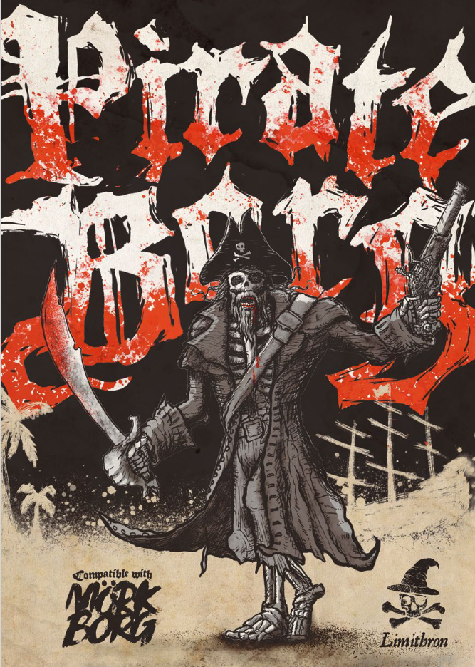
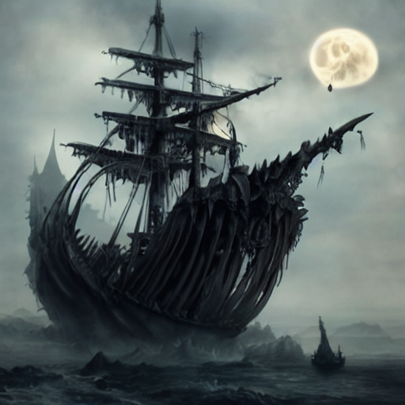
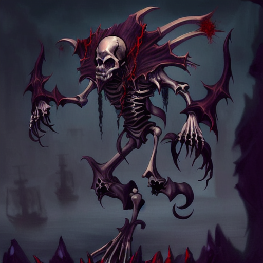
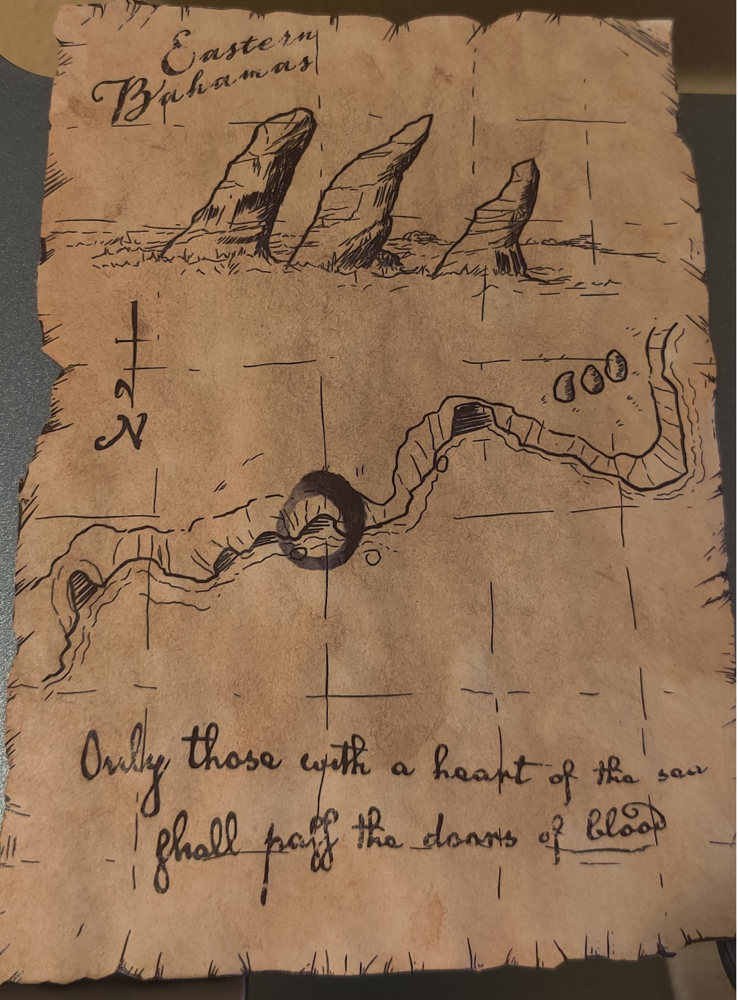
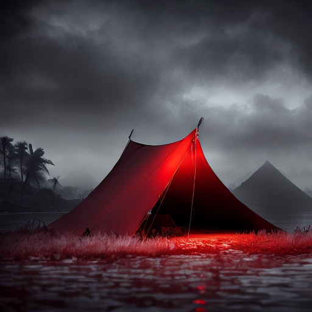
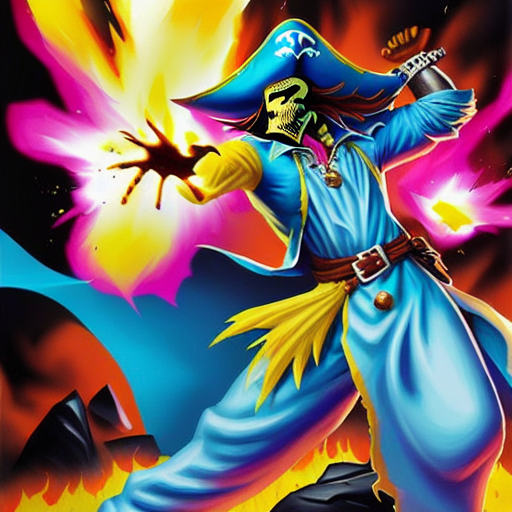
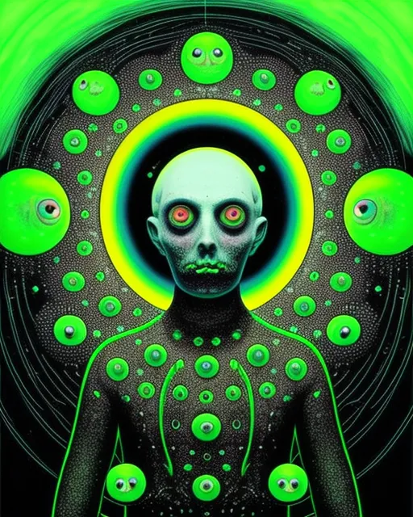
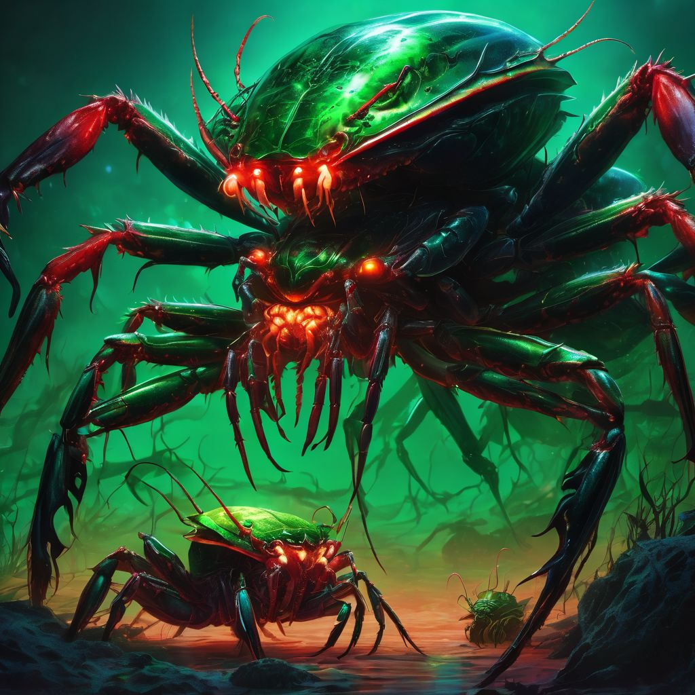
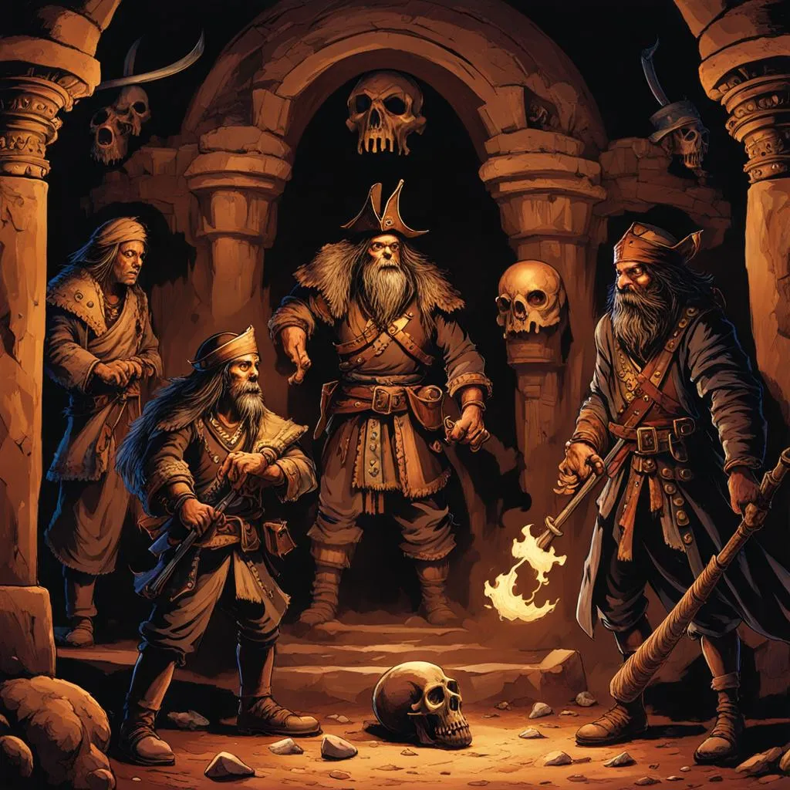
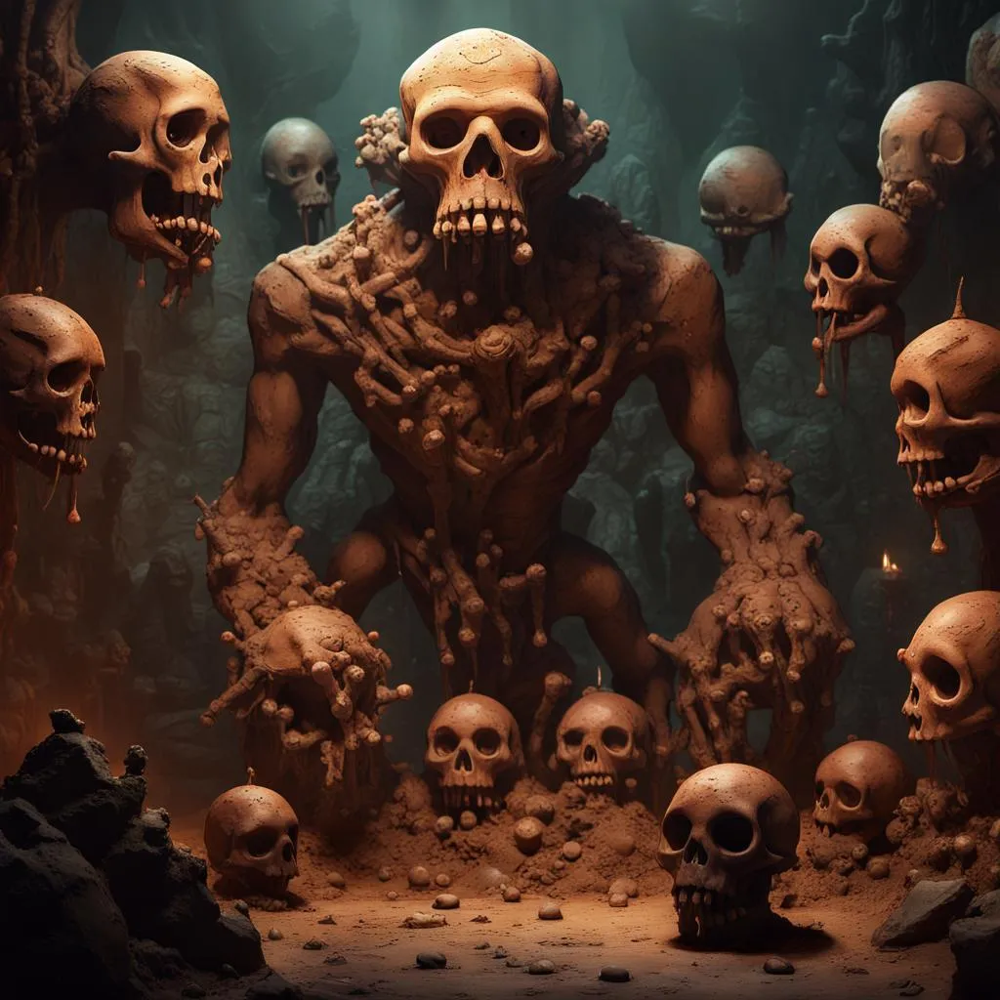

This game takes place in an occult version of our world’s Caribbean, during the golden age of piracy. When the first European explorers ventured into the Caribbean's uncharted waters, they discovered deserted islands brimming with temples of treasure, and arcane relics. The allure back in Europe proved irresistible, prompting thousands to leave their crowded, blighted homelands for the promise of the Caribbean. Yet, as these new settlers established a semblance of life on the mysterious islands, rumors spread in taverns of haunting screams echoing over sandy shores, malevolent forces arising from the islands sinister past, and ungodly monstrosities emerging from the stygian depths of the sea in the depths of night.
Hugh played Low Roller , a swashbuckler who concealed a mysterious past as a barkeep with a liking for mocking banter amongst the other crewmates. There was something contagious about him.
Dan played Iago ‘Le Red Bird’, a backstabbing rapscallion, a sailor with an insatiable urge for treasure. His previous adventures lead him to a narrow escape from a cannibalistic ending, but he never escaped that smell.
Annabel played Eggo, a writer. She sailed the sea to chronicle adventures she later hoped to profit from back home. Later in the game, she switched to playing Billy 'Knives', the Tarantula's young cabin boy.
Gary played Annemicke 'Flatline' Hollegate, a known pirate and heretic amongst the colonial powers of the Caribbean. He'd gained a knack for wilderness survival, even if it'd cost him his right eye in the process.
The player characters were novice sailors serving Captain Bloodwhip on his pirate frigate, The Tarantula, searching for treasure via a map the captain had guarded close to his chest since the journey began. For two weeks, the Tarantula had been sailing around the Bahamas, circling islets, the crew ordered to keep their eyes peeled for three rock columns leaning to the west.
Our adventure started on a dark stormy night on board the Tarantula. Gary clung to the top of the crows nest, scanning the tempestuous sea for danger. Dan and Hugh worked on the rain-drenched deck of the ship, mocking Gary and making banter to try and lift their spirits. Meanwhile Annabel was nestled in her bunk on the lower decks of the ship, recording her adventures in a journal she hoped to publish after she’d returned home.
From the crows nest, lightning silhouettes a boat on the horizon, heading directly for the Tarantula. As the ship sailed closer, Gary was able to make more details out: the ship was weaved together from a thousand bones, with three flaming skulls mounted to the mast of the ship. The salty sea air became tainted with the acrid scent of ash and burning bones. Unable to avoid the ship, the Tarantula is rammed, and skeletons soon leap aboard to attack the crew. Their bones are charred black, and their eye sockets burn brightly with an ethereal flame.
Dan, armed with a cutlass, fought off two skeletal adversaries on deck, parrying their strikes while responding with a few of his own, while Gary took pot shots at the invaders with his musket from the crows nest. Hugh, in a daring gambit, grabbed a rope hanging from a mast, and swung onto the ghost ship. However, he was quickly overwhelmed by two skeletons who ambushed him as he landed on the other side. One wailed with maniacal glee, as it took swipes at him with a pair of rusty knives. The other almost took Hugh’s life with a musket round. But luck was in Hugh’s favor, as a worn book in his breast pocket absorbed the deadly impact, sparing him from death. Fleeing for his life, Hugh tried to swing back onto the Tarantula, but his grip slipped on the rope on the way back, and he fell into the waves below. Miraculously (with some Devil’s luck) he managed to survive the waves below, clawing his way back onto the Tarantula through a gaping crack in the lower deck made by the rammed ship.
In the lower hold of the ship, Annabel was jolted from her bunk from the chaos happening above, and she hurried out into the hold of the ship. Scaggs, the Captain’s first mate, was trying to maintain leadership of the crew. He shouted into the chaos “Where is the Captain!?!”, and Annabel ran upstairs to check on the captain’s quarters in response. By the time Annabel had got to the top deck (and Gary had climbed down the crow’s nest), a huge amalgamation of bone, held together with rotting flax twine, climbed on board the ship in front of her, let out an demonic roar, and charged straight at her. Annabel narrowly dodged the ogre, while Gary climbed down from the nest to help her out. In a desperate attempt to face the ogre, Annabel spent several turns grappling with a cannon on the ship, struggling under it’s wait to try and turn it to face the amalgamation. But when she finally let the cannon fire, fate twisted, narrowly missing the amalgamation, the cannonball landing in the dark abyss of the ocean with a disheartening plunk.
Hugh climbed into the lower decks, the seawater up to his knees. He heard Billy ‘Knives’, the cabin boy, screaming desperately about the ship taking on water, while other crew members frantically tried to scoop up the water in a futile attempted to save the damned ship. As Hugh regarded the chaos, he quickly realized that the Tarantula was a lost cause, and ran upstairs to try and make an escape before the lower deck became a watery prison.
With the Cannonball failing to miss it’s mark, Gary, Annabel, and Dan were forced to confront the amalgamation through blades and gunfire. After taking out the amalgamation, Gary and Annabel ran to check on the captain in his quarters, who they found crushed beneath the weight of a fallen cabinet. In his dying breath, Bloodwhip bestowed on them the map to the treasure they sought. Gary took the map (and the captain’s cutlass), and they headed out to escape the ship.
At this point the Tarantula was close to capsizing, and the players knew they had to make a quick getaway. As Hugh was coming up the stairs, the ship really starting keeling, keeled, but he managed to hold onto the side of the door to the top deck to prevent falling off. Gary and Annabel managed to hold onto some shelving in the Captain’s study. On the other hand, Dan was unable to find something to hold onto, and he plunged into the fierce waters below.
Gary threw Dan a life preserver, the one lifeline which would prevent him from drowning in the rough waters. In desperation, Annabel swung onto the ghost ship to try and escape the water below, scaling the mast of the ship to try and escape the skeletons that awaited her there. At the top of the mast, another skeleton awaited, and she was forced to leap from the mast to survive. Tragedy unfolded as her head collided with the ship’s side. Unconscious and helpless, she drowned in the waters below. Hugh took the door of the ship and used it to keep him afloat in the water, whereas Gary took another life preserver and made it off the ship. The Tarantula and the ghost ship sunk beneath the waves, and what remained of the crew was left to hold on for dear life in the dark waters of the Caribbean, as the Tarantula sunk beneath the waves. The ghost ship, having accomplished whatever occult purpose for which it had attacked the Tarantula, also submerged beneath the stormy waves…
Since Annabel’s last character died, she decided to play as Billy, the cabin boy, so we generated some stats for him, and she took over to play as him for the rest of the adventure.
The players resumed play the next morning, part of the crew washed up on the shores of a small island. The storm had passed, with blue skies overhead. The island was itself unremarkable. Players could only see a canopy of bushes past the shoreline, with a single hill cresting the middle of the island.
After scavenging what they could from what washed up with them from the wreck of the Tarantula, players were able to find 4 days worth of water, and enough wood and sail to make a camp to survive the night, but no edible food. Billy found some ink and parchment, the lost reports of Annabel’s unfinished story she was writing the previous night. Annabel and Gary decided to build the tent from the supplies, while Dan and Hugh went to scavenge for food, Dan to the shoreline to search for seafood, and Hugh inland to hunt for what he could find in the bushes. Dan managed to find a nest of turtles, and spent several hours gathering some baby turtles in a bucket to cook for food. Hugh found a nest of snakes, shooting the mother, and taking it back to the camp with some of the mother’s eggs.
Together, they managed to find enough food to feed the surviving crew for the rest of the day, so Hugh and Dan decided to spend the rest of the afternoon exploring the island, beginning by climbing the hill to survey the land. They spent an hour reaching the summit. There, they could see that the island was diamond shaped, about three miles in radius from the hill. On the horizon, they could see two islands, about 15 miles from them to the left of the side of the hill they hiked up, and a small camp on the other side of the island, to the right. They decided to hike down to the encampment to see what they could find, perhaps hoping to find some other survivors of the Tarantula, or some other hope of escaping the island.
As they reached the encampment, Hugh and Dan found a chilling scence. The encampment was small, with only a single tent and bed roll, but completely abandoned. A thick trail of congealed blood traced a trail from the bed roll to the waterline of the beach. A musket, fired, lay on the ground next to the bed. They scrounged together whatever supplies they could find, including some ammunition, a hunting knife, a fishing net, a small barrel of gunpowder, and a barrel of rum. Sensing danger, and noticing that the sun was beginning to set, they took what they could hold back to Annabel and Gary, who had finally finished building the camp for the night.
The gang made a fire out of the remaining scraps of the ship that weren’t used for the tent, and drank the rum that Dan and Gary had scavenged around the heat. Warned by the abandoned encampment, the players decided to keep watch around the fire over the night, swapping out while sleeping. Fortunately, the night was uneventful, and the crew finally managed to rest for the first time after the chaos that shipwrecked the Tarantula.
The Captain’s first mate Scaggs had survived the shipwreck of the Tarantula. A weathered sailor, he had the best knowledge of the Caribbean, and had the highest likelihood of being able to locate them by taking a closer look at the islands Hugh and Dan had seen from the top of the hill. The crew therefore took of on a hike the next morning, while Dan went out to the shore to fish for more food with the net he had found from the encampment. Reaching the top of the hill and stopping to take a look, Scaggs was able to make out their location. They were on Conception Island, the two other islands being the Isle of Yuma, and Rum Quay. Scaggs didn’t know much about the Isle of Yuma, but remarked that he had heard that Rum Quay had a small settlement of sailors. With this knowledge, the players started to make a plan to escape Conception Island.
On the top of the hill, Hugh poured out a pile of gunpowder from the barrel he’d found at the other encampment, ripping off rags from his clothing to makeshift a rudimentary fuse. Meanwhile, Gary went back down to the bonfire at the encampment down the hill. Hugh lit the rags, and sprinted for cover, ducking and covering his ears with his hands to protect himself. The gunpowder went off with a huge explosion, which signaled Gary to make some smoke signals with the bonfire below. After a few hours, Hugh managed to see a small rowboat coming towards them from Rum Quay. They’d manage to make contact with someone who could rescue them.
After a few hours, the boat reached Conception Island, and the players travelled down to the South of the Island to make their escape. A weathered, grumpy old fisherwoman, Esmeralda, got out, casting a suspicious look at the survivors, and probed them for their story of how they arrived on Conception Island. Her grumpy demeanor shifted as she realized she could make some money out of the situation. Sensing an opportunity, she offered to sail the players back to Rum Quay… for a high price. After some bartering, a deal was struck; she’d use her fishing boat as a makeshift taxi to make a journey to Rum Quay, in exchange for a vintage bottle of rum that Hugh had saved from his previous life as a tavern keep, and 50 pieces of silver.
On the journey, the player characters were able to get a better look at Rum Quay. The island was about twice the size of Conception Island, with a small shanty town of driftwood shacks on the beach north side of the island. There was a hill on the west side of the island, and a shipwreck on the east side. Most interestingly, on the south side of the island, the players saw three large spiky rocks jutting out of the cliffside on the opposite side of the island, just as was indicated in the treasure map Bloodwhip had given them. Somehow they’d manage to stumble on the location of the treasure they were looking for.
Evening descended on Rum Quay as they arrived, and players headed to the shack with the most commotion: the tavern. They purchased lodging in the bunks in the back room of the tavern from the keeper, Juba, who also told players he’d pay some silver if they could get the meat of some snails which were normally found on the shore of the quay. The players decided to spend the rest of the evening searching for these snails.
The shore, eerily silent, harbored the snails the player characters were searching for. Each snail was the size of a clenched fist. Looking inside the shells, the players could see an emerald spheres embedded in the flesh of each snail, each one growing green in the darkness. Gary reached into the slimy interior of the snail shell to grab one of the shells. The moment he touched one, his mind melted away, and he found himself in a void. Thousands of ethereal spheres, pulsating with green, surrounded him. As he remained in this world, he began to get the feeling that the spheres were *staring at him* from the abyss. Panic seized him, and he released his grasp on the sphere he was holding onto, which threw him back into reality.
By this time, the shore had become dark. Gary only had a candle to light the groups way back to the shanty town. In the darkness, the party was ambushed by two shoal spiders, semi-translucent crustaceans the size of jaguars with razor sharp crab claws. Annabel threw one of the snails at a spider, which managed to lodge itself onto the spider’s head. It became entranced by the emerald orb inside, and the spider was quickly dispatched, the second following shortly after.
Back in town, the players sold the snails they’d collected to Juba, and asked about the shoal spiders that attacked them. Juba warned them to never again go out into the dark without a good light source - the spiders, hunters of the night, are easily repelled by a strong enough light source. Using some of the snails, Juba cooked the players a meal for the evening. Noticing the disappearance of some of the eyeballs, the players inquired about the spheres. Juba initially looked uncomfortable, but then stammered that the spheres were poisonous, and he discards them behind the shack when cooking them.
The next day, Dan negotiated a trip back to Conception island with Esmeralda to get some more of the crew, in exchange for helping Esmeralda with her fishing for the rest of the day. Back on Conception Island, Dan was horrified to discover that, lacking enough wood to light a large enough fire on the island, most of the crew had been devoured by shore spiders in the night. The remaining scarred members of the crew came back with Dan and Esmeralda to Rum Quay.
Meanwhile, Hugh, Gary, and Annabel picked up some supplies from the general store in Rum Quay, owned by Juba’s brother Yiba, including some torches. They also hiked up to the rock columns on the other side of the island. They found the cliff face, with the entry ways from the waters drawn exactly as indicated on the treasure map. They headed back to the tavern, planning to sail around to the entry ways the next day.
The next morning, after Dan arrived with the rest of the crew, the player characters set out to sail into the caverns on the other side of the island. Promising Esmeralda an equal share of the cut of the treasure they planned to find inside the cavern, she sailed her rowboat with the characters to the other side of the cavern. The waves crashed violently on the entry ways to the cavern, which were surrounded by jagged rocks, but this did not scare the player characters. They dived into the waters one by one, somehow managing not to get too heavily scratched by the rocks on the way in. They thus found themselves in The Caves of Seven Skulls.
The players found themselves in a dark, low ceilinged cavern. Fortunately they had brought some torches with them, which lit their path and allowed them to map out the labyrinth of twisting paths through the cave. They eventually heard an arcane hum in the labyrinth, and following this hum led them into a large chamber, with a stone door covered with ancient glyphs none of the players could decipher, a basin on the ground at the center of the room, and a strong smell of sea brine.
The treasure map given at the adventure had told them *Only those with a heart of the sea may pass the doors of blood.* Thinking back to the map, Dan used his cutlass to make a small cut in his finger, and letting some drops of blood enter the basin caused the arcane hum in the room to increase. Prompted by this, each member of the team sliced a bigger wound in their palm, letting the blood drip into the basin, and causing the stone door to open to a wide passage, much flatter, carved out of the rock. Bandaging up the wounds with rags from their clothing, the players entered the doorway.
The passage branched into two entryways. Heading right, the players were led into a dark room, the entryway soon falling away into a pit of dark water. The players were scared by what might be beneath the depths, and headed to the entryway on the left instead.
This room was lit by torches, and smelled of incense. There, players meet Tetonton, a 10’ tall construct of clay, with 7 clay animal skulls as heads. With an authoritative voice coming from the Baboon skull, Tetonton declared itself as the sentinel of the treasury in this tomb, relinquishing it’s protection only to the new ruler of the Caribbean, wielding the ceremonial scepter and cap. The room was decorated with pictograms showing warriors with the heads of animals fighting tentacled monstrosities with clubs and catapults.
The players told him of how the Caribbean had changed since he was charged with protecting the tomb, but the construct refused to move. Forced to improvise, the players convinced Tetonton to anoint himself with the remaining gunpowder they had stocked, as a funeral ceremony to the last fallen ruler. They threw a match into the chamber, darting into the other room and jumping into the water to protect themselves.
The gunpowder did little to damage the clay Golem, protected by some mystical power within it’s chamber. However, the gunpowder’s explosion did have the effect of briefly illuminating the water they were diving into, and the players got glimpse of a sarcophagus in the waters. Gary dived to the bottom of the waters, pulling the lid of the sarcophagus apart, and revealing a mummified body with a scepter and emerald green bird mask. Returning to the chamber of a very confused Tetonton, they convinced him to step aside for them to enter the vault, where they found piles of gold coins. Leaving the chamber, they told Tetonton that, relieved of his duty as protector of the vault, his new job was to travel with them, protecting the new rulers of the Caribbean. Preparing to make leave out of the vault, they took one of the 7 torches from around the aside of the room to help them make way out of the tomb. However, removing this torch from it’s sconce caused one of Tetonton’s heads, a chipmunk skull, to crumble into dust, which made them change their mind about taking the six remaining torches with them.
With their newfound gold coins, the players had successfully found the treasure they’d originally set out with Captain Bloodwhip to find. Making preparations to leave the tomb, the players now had the funds to take on new adventures beyond Rum Quay…